CODING AGENTS AS PIXEL WORLD MODELS
traex/DeepSeek-V4.1-Flash · 0083
点击播放 · 原生 RGB 像素
逐轮保存的候选
回放视频、检查图与代码变化。
每份候选均可单独播放。实际图片检查记录在下方工具轨迹中。
候选 01播放与检查图
点击播放 · 原生 RGB 像素
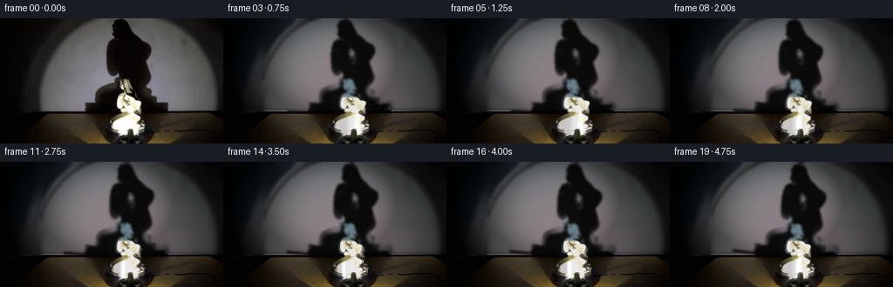
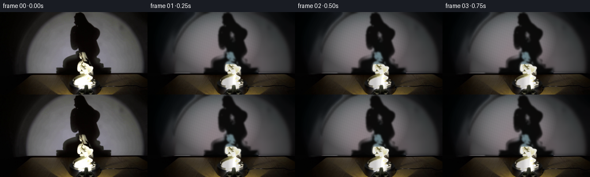
展开代码变化
--- 上一保存版本
+++ 本次保存版本
@@ -0,0 +1,235 @@
+"""Generate a five-second turntable study from the supplied first frame."""
+
+from pathlib import Path
+
+import cv2
+import numpy as np
+from PIL import Image
+
+import artifact_io
+
+
+ROOT = Path(__file__).resolve().parent
+W, H, N, FPS = 256, 144, 20, 4
+
+
+def smoothstep(edge0, edge1, value):
+ t = np.clip((value - edge0) / (edge1 - edge0), 0.0, 1.0)
+ return t * t * (3.0 - 2.0 * t)
+
+
+def bilinear_warp(image, map_x, map_y):
+ return cv2.remap(
+ image,
+ map_x.astype(np.float32),
+ map_y.astype(np.float32),
+ interpolation=cv2.INTER_CUBIC,
+ borderMode=cv2.BORDER_REFLECT_101,
+ )
+
+
+def build_wall_plate(source):
+ """Recover the illuminated wall under the original projected shadow."""
+ gray = cv2.cvtColor(source, cv2.COLOR_BGR2GRAY).astype(np.float32)
+ yy, xx = np.mgrid[:H, :W]
+ spotlight = ((xx - 126.0) / 82.0) ** 2 + ((yy - 54.0) / 67.0) ** 2 < 1.0
+ shadow = ((gray < 76.0) & spotlight & (yy < 109)).astype(np.uint8) * 255
+
+ count, labels, stats, _ = cv2.connectedComponentsWithStats(shadow)
+ main = np.zeros_like(shadow)
+ for index in range(1, count):
+ x, y, width, height, area = stats[index]
+ if area > 70 and x < 185 and x + width > 88 and y < 96:
+ main[labels == index] = 255
+ main = cv2.morphologyEx(main, cv2.MORPH_CLOSE, np.ones((5, 5), np.uint8))
+ main = cv2.dilate(main, np.ones((5, 5), np.uint8))
+
+ plate = cv2.inpaint(source, main, 8, cv2.INPAINT_TELEA)
+ plate = cv2.GaussianBlur(plate, (0, 0), 2.3)
+
+ # Restore the table and platform: only the wall is synthesized here.
+ lower = yy >= 106
+ plate[lower] = source[lower]
+ edge = (yy >= 104) & (yy < 106)
+ mix = ((yy - 104.0) / 2.0)[..., None]
+ plate = np.where(edge[..., None], plate * (1.0 - mix) + source * mix, plate)
+ plate = plate.astype(np.uint8)
+
+ # The spotlight edge is elliptical and soft. Reconstruct it as a broad,
+ # gently grained pool rather than leaving the inpainting blotches visible.
+ wall = plate.astype(np.float32)
+ wall_gray = cv2.cvtColor(plate, cv2.COLOR_BGR2GRAY).astype(np.float32)
+ pool = np.exp(-(((xx - 126.0) / 84.0) ** 2 + ((yy - 58.0) / 69.0) ** 2) ** 1.8)
+ pool *= smoothstep(0.015, 0.09, pool)
+ grain = (
+ 0.985
+ + 0.010 * np.sin(xx * 1.73 + yy * 0.31)
+ + 0.007 * np.sin(xx * 0.43 - yy * 1.19)
+ )
+ target_gray = 7.0 + 126.0 * pool * grain
+ gain = target_gray / np.maximum(wall_gray, 8.0)
+ gain = np.clip(gain, 0.68, 1.55)
+ wall *= gain[..., None]
+ wall[..., 0] *= 0.995
+ wall[..., 1] *= 0.992
+ wall[..., 2] *= 1.012
+ wall = np.clip(wall, 0, 255)
+ wall[lower] = source[lower]
+ return wall.astype(np.uint8), main
+
+
+def extract_shadow_alpha(source, shadow_region):
+ gray = cv2.cvtColor(source, cv2.COLOR_BGR2GRAY).astype(np.float32)
+ region = smoothstep(58.0, 67.0, shadow_region.astype(np.float32))
+ # Approximate the unshadowed wall from the local blurred maximum.
+ lit = cv2.GaussianBlur(gray, (0, 0), 7.0)
+ alpha = np.clip((lit - gray) / np.maximum(lit - 8.0, 1.0), 0.0, 1.0)
+ alpha *= region
+ alpha = smoothstep(0.08, 0.83, alpha)
+ alpha = cv2.GaussianBlur(alpha, (0, 0), 0.7)
+ return alpha.astype(np.float32)
+
+
+def extract_statue(source):
+ """Return a softly matted porcelain figurine and its source-space mask."""
+ gray = cv2.cvtColor(source, cv2.COLOR_BGR2GRAY).astype(np.float32)
+ yy, xx = np.mgrid[:H, :W]
+ roi = (xx >= 113) & (xx <= 176) & (yy >= 89) & (yy <= 134)
+ alpha = smoothstep(47.0, 82.0, gray) * roi
+
+ # Preserve the figurine's shadowed contour at its feet.
+ lower = (yy >= 105) & (yy <= 133) & (xx >= 127) & (xx <= 166)
+ alpha = np.maximum(alpha, smoothstep(25.0, 54.0, gray) * lower)
+ alpha = cv2.GaussianBlur(alpha, (0, 0), 0.55)
+ return alpha.astype(np.float32)
+
+
+def warp_shadow(base, alpha, angle):
+ yy, xx = np.mgrid[:H, :W].astype(np.float32)
+ pivot_x, pivot_y = 126.0, 91.0
+ theta = np.deg2rad(angle)
+ cosine, sine = np.cos(theta), np.sin(theta)
+ scale = 1.0 + 0.026 * np.sin(theta * 1.7)
+
+ dx, dy = xx - pivot_x, yy - pivot_y
+ sx = (cosine * dx + sine * dy) / scale + pivot_x
+ sy = (-sine * dx + cosine * dy) / scale + pivot_y
+
+ # Perspective projection compresses the shadow slightly as the figure
+ # turns; the head leads the body by a small amount.
+ sx += 0.012 * (pivot_y - sy) * np.sin(theta * 2.0)
+ sy += 0.006 * (pivot_x - sx) * np.sin(theta)
+ warped = bilinear_warp(alpha, sx, sy)
+
+ # Match the very soft penumbra visible in the supplied photograph.
+ warped = cv2.GaussianBlur(warped, (0, 0), 1.05)
+ warped *= (yy < 109).astype(np.float32)
+ shade = np.array([4.0, 3.5, 3.0], np.float32)
+ out = base.astype(np.float32) * (1.0 - 0.94 * warped[..., None])
+ out += shade * (0.94 * warped[..., None])
+ return np.clip(out, 0, 255).astype(np.uint8)
+
+
+def animate_statue(source, statue_alpha, frame_index):
+ phase = 2.0 * np.pi * frame_index / (N - 1)
+ yy, xx = np.mgrid[:H, :W].astype(np.float32)
+ pivot_x, pivot_y = 147.0, 133.0
+
+ # Clockwise turntable motion: the nose and shoulder sweep left-to-right,
+ # while the projected width changes with the visible half of the bust.
+ turn = np.sin(phase)
+ width_scale = 1.0 + 0.075 * turn
+ shear = 1.5 * turn
+
+ dx = xx - pivot_x
+ dy = yy - pivot_y
+ src_x = pivot_x + dx / width_scale - shear * np.clip(-dy / 43.0, 0.0, 1.0)
+ src_y = pivot_y + dy
+ warped_rgb = bilinear_warp(source, src_x, src_y)
+ warped_alpha = bilinear_warp(statue_alpha, src_x, src_y)
+ warped_alpha *= smoothstep(89.0, 92.0, yy)
+ warped_alpha *= 1.0 - smoothstep(132.0, 135.0, yy)
+
+ # Rotate the glossy highlight around the cylindrical porcelain surface.
+ center_x = 147.0 + 1.4 * turn
+ body_weight = smoothstep(98.0, 120.0, yy)
+ highlight_x = center_x + 6.8 * np.sin(phase + 0.3) - 1.4 * body_weight
+ highlight = np.exp(-((xx - highlight_x) / 2.4) ** 2) * body_weight
+ rim = np.exp(-((xx - (center_x + 12.5)) / 2.1) ** 2) * body_weight
+ warm_side = smoothstep(1.5, 10.0, center_x - xx) * body_weight
+
+ porcelain = warped_rgb.astype(np.float32)
+ porcelain *= (0.91 + 0.11 * highlight[..., None] - 0.13 * warm_side[..., None])
+ porcelain += np.array([23.0, 22.0, 19.0]) * highlight[..., None]
+ porcelain += np.array([11.0, 10.0, 8.0]) * rim[..., None]
+ porcelain[..., 2] += 2.0 * body_weight
+ porcelain = np.clip(porcelain, 0, 255)
+ return porcelain, warped_alpha.astype(np.float32)
+
+
+def rotate_turntable_plate(source, frame_index):
+ """Add a restrained moving sheen and seam to the existing black platter."""
+ phase = 2.0 * np.pi * frame_index / (N - 1)
+ yy, xx = np.mgrid[:H, :W].astype(np.float32)
+ out = source.astype(np.float32)
+ cx, cy = 147.0, 133.0
+ dx, dy = xx - cx, (yy - cy) * 2.5
+ radius = np.sqrt(dx * dx + dy * dy)
+ angle = np.arctan2(dy, dx)
+ platter = smoothstep(29.0, 27.0, radius) * (yy >= 124.0)
+
+ sheen = np.exp(-((angle - (phase - 0.45)) / 0.17) ** 2)
+ sheen *= smoothstep(10.0, 23.0, radius) * platter
+ out += np.array([12.0, 11.0, 8.0]) * sheen[..., None]
+
+ seam_angle = phase + 0.85
+ seam_dist = np.abs(np.arctan2(np.sin(angle - seam_angle), np.cos(angle - seam_angle)))
+ seam = np.exp(-(seam_dist / 0.032) ** 2) * platter * smoothstep(8.0, 17.0, radius)
+ out += np.array([10.0, 9.0, 7.0]) * seam[..., None]
+
+ # A faint reflected figurine moves with the glossy platter.
+ reflection = np.exp(-((xx - (146.0 + 3.0 * np.sin(phase))) / 11.0) ** 2)
+ reflection *= np.exp(-((yy - 135.0) / 4.2) ** 2)
+ out += np.array([14.0, 13.0, 10.0]) * reflection[..., None]
+ return np.clip(out, 0, 255).astype(np.uint8)
+
+
+def generate():
+ original_bgr = cv2.imread(str(ROOT / "first_frame.png"), cv2.IMREAD_COLOR)
+ if original_bgr is None or original_bgr.shape != (H, W, 3):
+ raise RuntimeError("first_frame.png must be a 256x144 RGB image")
+ original = np.ascontiguousarray(original_bgr[:, :, ::-1])
+
+ wall_plate, shadow_region = build_wall_plate(original_bgr)
+ shadow_alpha = extract_shadow_alpha(original_bgr, shadow_region)
+ statue_alpha = extract_statue(original_bgr)
+
+ frames = []
+ for index in range(N):
+ if index == 0:
+ frames.append(original.copy())
+ continue
+
+ t = index / (N - 1)
+ shadow_angle = 7.0 * t
+ frame = warp_shadow(wall_plate, shadow_alpha, shadow_angle)
+
+ # Keep the table, cable, and platform at the exact photographed
+ # geometry; only their glossy response changes with the platter.
+ frame[108:] = original[108:]
+ frame = rotate_turntable_plate(frame, index)
+
+ statue_rgb, alpha = animate_statue(original_bgr, statue_alpha, index)
+ statue_rgb = statue_rgb[:, :, ::-1]
+ alpha3 = alpha[..., None]
+ frame = statue_rgb * alpha3 + frame.astype(np.float32) * (1.0 - alpha3)
+ frames.append(np.clip(frame, 0, 255).astype(np.uint8))
+
+ frames = np.stack(frames)
+ assert frames.shape == (N, H, W, 3) and frames.dtype == np.uint8
+ assert np.array_equal(frames[0], original)
+ artifact_io.save(frames, ROOT)
+
+
+if __name__ == "__main__":
+ generate()
候选 02播放与检查图
点击播放 · 原生 RGB 像素
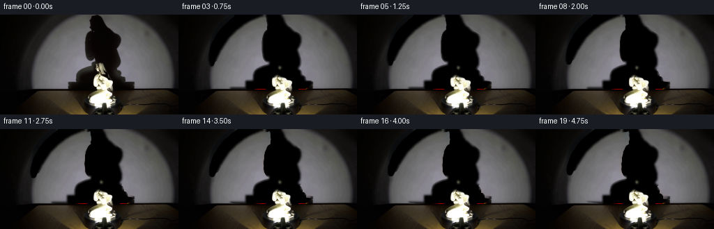
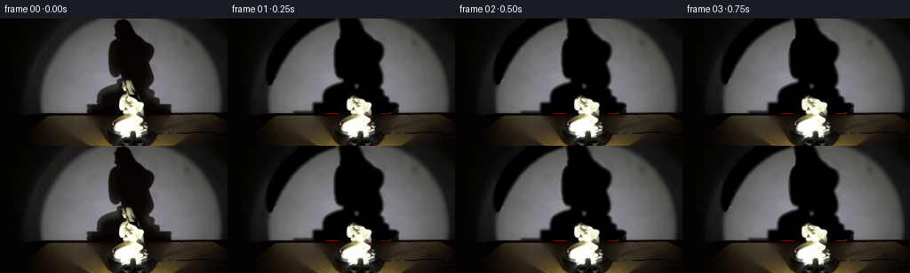
展开代码变化
--- 上一保存版本
+++ 本次保存版本
@@ -33,59 +33,34 @@
gray = cv2.cvtColor(source, cv2.COLOR_BGR2GRAY).astype(np.float32)
yy, xx = np.mgrid[:H, :W]
spotlight = ((xx - 126.0) / 82.0) ** 2 + ((yy - 54.0) / 67.0) ** 2 < 1.0
- shadow = ((gray < 76.0) & spotlight & (yy < 109)).astype(np.uint8) * 255
+ shadow = ((gray < 78.0) & spotlight & (yy < 108)).astype(np.uint8) * 255
count, labels, stats, _ = cv2.connectedComponentsWithStats(shadow)
main = np.zeros_like(shadow)
for index in range(1, count):
x, y, width, height, area = stats[index]
- if area > 70 and x < 185 and x + width > 88 and y < 96:
+ if area > 80 and x < 185 and x + width > 90 and y < 96:
main[labels == index] = 255
- main = cv2.morphologyEx(main, cv2.MORPH_CLOSE, np.ones((5, 5), np.uint8))
+ main = cv2.morphologyEx(main, cv2.MORPH_CLOSE, np.ones((7, 7), np.uint8))
main = cv2.dilate(main, np.ones((5, 5), np.uint8))
-
- plate = cv2.inpaint(source, main, 8, cv2.INPAINT_TELEA)
- plate = cv2.GaussianBlur(plate, (0, 0), 2.3)
-
- # Restore the table and platform: only the wall is synthesized here.
- lower = yy >= 106
- plate[lower] = source[lower]
- edge = (yy >= 104) & (yy < 106)
- mix = ((yy - 104.0) / 2.0)[..., None]
- plate = np.where(edge[..., None], plate * (1.0 - mix) + source * mix, plate)
- plate = plate.astype(np.uint8)
-
- # The spotlight edge is elliptical and soft. Reconstruct it as a broad,
- # gently grained pool rather than leaving the inpainting blotches visible.
- wall = plate.astype(np.float32)
- wall_gray = cv2.cvtColor(plate, cv2.COLOR_BGR2GRAY).astype(np.float32)
- pool = np.exp(-(((xx - 126.0) / 84.0) ** 2 + ((yy - 58.0) / 69.0) ** 2) ** 1.8)
- pool *= smoothstep(0.015, 0.09, pool)
- grain = (
- 0.985
- + 0.010 * np.sin(xx * 1.73 + yy * 0.31)
- + 0.007 * np.sin(xx * 0.43 - yy * 1.19)
+ main[108:] = 0
+
+ plate = cv2.inpaint(source, main, 12, cv2.INPAINT_TELEA)
+ soft = cv2.GaussianBlur(main, (0, 0), 1.5).astype(np.float32) / 255.0
+ plate = (
+ plate.astype(np.float32) * soft[..., None]
+ + source.astype(np.float32) * (1.0 - soft[..., None])
)
- target_gray = 7.0 + 126.0 * pool * grain
- gain = target_gray / np.maximum(wall_gray, 8.0)
- gain = np.clip(gain, 0.68, 1.55)
- wall *= gain[..., None]
- wall[..., 0] *= 0.995
- wall[..., 1] *= 0.992
- wall[..., 2] *= 1.012
- wall = np.clip(wall, 0, 255)
- wall[lower] = source[lower]
- return wall.astype(np.uint8), main
-
-
-def extract_shadow_alpha(source, shadow_region):
+ plate = cv2.GaussianBlur(plate, (0, 0), 0.5)
+ plate = np.clip(plate, 0, 255).astype(np.uint8)
+ return plate, main, soft
+
+
+def extract_shadow_alpha(source, plate, shadow_region):
gray = cv2.cvtColor(source, cv2.COLOR_BGR2GRAY).astype(np.float32)
- region = smoothstep(58.0, 67.0, shadow_region.astype(np.float32))
- # Approximate the unshadowed wall from the local blurred maximum.
- lit = cv2.GaussianBlur(gray, (0, 0), 7.0)
- alpha = np.clip((lit - gray) / np.maximum(lit - 8.0, 1.0), 0.0, 1.0)
- alpha *= region
- alpha = smoothstep(0.08, 0.83, alpha)
+ base = cv2.cvtColor(plate, cv2.COLOR_BGR2GRAY).astype(np.float32)
+ alpha = np.clip((base - gray) / np.maximum(base - 7.0, 1.0), 0.0, 1.0)
+ alpha *= shadow_region.astype(np.float32)
alpha = cv2.GaussianBlur(alpha, (0, 0), 0.7)
return alpha.astype(np.float32)
@@ -138,12 +113,13 @@
# Clockwise turntable motion: the nose and shoulder sweep left-to-right,
# while the projected width changes with the visible half of the bust.
turn = np.sin(phase)
- width_scale = 1.0 + 0.075 * turn
- shear = 1.5 * turn
+ width_scale = 1.0 + 0.055 * turn
+ shear = 1.1 * turn
dx = xx - pivot_x
dy = yy - pivot_y
- src_x = pivot_x + dx / width_scale - shear * np.clip(-dy / 43.0, 0.0, 1.0)
+ height_falloff = smoothstep(89.0, 103.0, yy)
+ src_x = pivot_x + dx / width_scale - shear * np.clip(-dy / 43.0, 0.0, 1.0) * height_falloff
src_y = pivot_y + dy
warped_rgb = bilinear_warp(source, src_x, src_y)
warped_alpha = bilinear_warp(statue_alpha, src_x, src_y)
@@ -153,15 +129,15 @@
# Rotate the glossy highlight around the cylindrical porcelain surface.
center_x = 147.0 + 1.4 * turn
body_weight = smoothstep(98.0, 120.0, yy)
- highlight_x = center_x + 6.8 * np.sin(phase + 0.3) - 1.4 * body_weight
- highlight = np.exp(-((xx - highlight_x) / 2.4) ** 2) * body_weight
+ highlight_x = center_x + 6.2 * np.sin(phase + 0.3) - 1.2 * body_weight
+ highlight = np.exp(-((xx - highlight_x) / 2.8) ** 2) * body_weight
rim = np.exp(-((xx - (center_x + 12.5)) / 2.1) ** 2) * body_weight
warm_side = smoothstep(1.5, 10.0, center_x - xx) * body_weight
porcelain = warped_rgb.astype(np.float32)
- porcelain *= (0.91 + 0.11 * highlight[..., None] - 0.13 * warm_side[..., None])
- porcelain += np.array([23.0, 22.0, 19.0]) * highlight[..., None]
- porcelain += np.array([11.0, 10.0, 8.0]) * rim[..., None]
+ porcelain *= (0.94 + 0.075 * highlight[..., None] - 0.10 * warm_side[..., None])
+ porcelain += np.array([17.0, 16.0, 14.0]) * highlight[..., None]
+ porcelain += np.array([8.0, 7.0, 6.0]) * rim[..., None]
porcelain[..., 2] += 2.0 * body_weight
porcelain = np.clip(porcelain, 0, 255)
return porcelain, warped_alpha.astype(np.float32)
@@ -180,17 +156,17 @@
sheen = np.exp(-((angle - (phase - 0.45)) / 0.17) ** 2)
sheen *= smoothstep(10.0, 23.0, radius) * platter
- out += np.array([12.0, 11.0, 8.0]) * sheen[..., None]
+ out += np.array([7.0, 6.5, 5.0]) * sheen[..., None]
seam_angle = phase + 0.85
seam_dist = np.abs(np.arctan2(np.sin(angle - seam_angle), np.cos(angle - seam_angle)))
seam = np.exp(-(seam_dist / 0.032) ** 2) * platter * smoothstep(8.0, 17.0, radius)
- out += np.array([10.0, 9.0, 7.0]) * seam[..., None]
+ out += np.array([6.0, 5.5, 4.0]) * seam[..., None]
# A faint reflected figurine moves with the glossy platter.
reflection = np.exp(-((xx - (146.0 + 3.0 * np.sin(phase))) / 11.0) ** 2)
reflection *= np.exp(-((yy - 135.0) / 4.2) ** 2)
- out += np.array([14.0, 13.0, 10.0]) * reflection[..., None]
+ out += np.array([10.0, 9.0, 7.0]) * reflection[..., None]
return np.clip(out, 0, 255).astype(np.uint8)
@@ -200,8 +176,8 @@
raise RuntimeError("first_frame.png must be a 256x144 RGB image")
original = np.ascontiguousarray(original_bgr[:, :, ::-1])
- wall_plate, shadow_region = build_wall_plate(original_bgr)
- shadow_alpha = extract_shadow_alpha(original_bgr, shadow_region)
+ wall_plate, shadow_region, wall_soft_mask = build_wall_plate(original_bgr)
+ shadow_alpha = extract_shadow_alpha(original_bgr, wall_plate, shadow_region)
statue_alpha = extract_statue(original_bgr)
frames = []
@@ -223,6 +199,9 @@
statue_rgb = statue_rgb[:, :, ::-1]
alpha3 = alpha[..., None]
frame = statue_rgb * alpha3 + frame.astype(np.float32) * (1.0 - alpha3)
+ # Unaffected parts of the wall retain the photograph exactly.
+ outside = 1.0 - wall_soft_mask[..., None]
+ frame = frame * (1.0 - outside) + original.astype(np.float32) * outside
frames.append(np.clip(frame, 0, 255).astype(np.uint8))
frames = np.stack(frames)
候选 03播放与检查图
点击播放 · 原生 RGB 像素
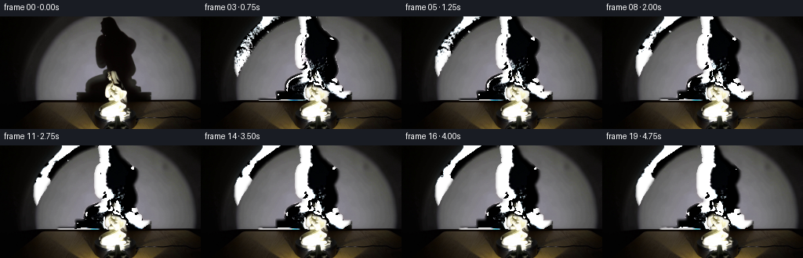
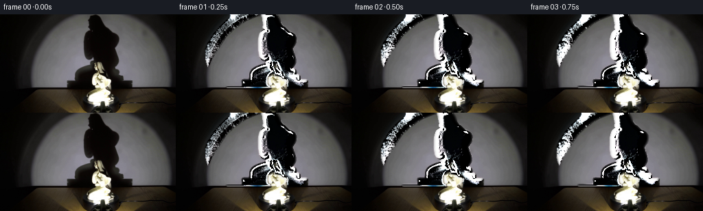
展开代码变化
--- 上一保存版本
+++ 本次保存版本
@@ -45,13 +45,13 @@
main = cv2.dilate(main, np.ones((5, 5), np.uint8))
main[108:] = 0
- plate = cv2.inpaint(source, main, 12, cv2.INPAINT_TELEA)
+ plate = cv2.inpaint(source, main, 10, cv2.INPAINT_TELEA)
+ plate = cv2.GaussianBlur(plate, (0, 0), 4.0)
soft = cv2.GaussianBlur(main, (0, 0), 1.5).astype(np.float32) / 255.0
plate = (
plate.astype(np.float32) * soft[..., None]
+ source.astype(np.float32) * (1.0 - soft[..., None])
)
- plate = cv2.GaussianBlur(plate, (0, 0), 0.5)
plate = np.clip(plate, 0, 255).astype(np.uint8)
return plate, main, soft
@@ -59,9 +59,9 @@
def extract_shadow_alpha(source, plate, shadow_region):
gray = cv2.cvtColor(source, cv2.COLOR_BGR2GRAY).astype(np.float32)
base = cv2.cvtColor(plate, cv2.COLOR_BGR2GRAY).astype(np.float32)
- alpha = np.clip((base - gray) / np.maximum(base - 7.0, 1.0), 0.0, 1.0)
+ alpha = np.clip((base - gray) / np.maximum(base - 5.0, 1.0), 0.0, 1.0)
alpha *= shadow_region.astype(np.float32)
- alpha = cv2.GaussianBlur(alpha, (0, 0), 0.7)
+ alpha = cv2.GaussianBlur(alpha, (0, 0), 0.6)
return alpha.astype(np.float32)
@@ -79,7 +79,7 @@
return alpha.astype(np.float32)
-def warp_shadow(base, alpha, angle):
+def warp_shadow(source, base, initial_alpha, angle):
yy, xx = np.mgrid[:H, :W].astype(np.float32)
pivot_x, pivot_y = 126.0, 91.0
theta = np.deg2rad(angle)
@@ -94,14 +94,20 @@
# turns; the head leads the body by a small amount.
sx += 0.012 * (pivot_y - sy) * np.sin(theta * 2.0)
sy += 0.006 * (pivot_x - sx) * np.sin(theta)
- warped = bilinear_warp(alpha, sx, sy)
+ warped = bilinear_warp(initial_alpha, sx, sy)
# Match the very soft penumbra visible in the supplied photograph.
- warped = cv2.GaussianBlur(warped, (0, 0), 1.05)
+ warped = cv2.GaussianBlur(warped, (0, 0), 0.55)
warped *= (yy < 109).astype(np.float32)
shade = np.array([4.0, 3.5, 3.0], np.float32)
- out = base.astype(np.float32) * (1.0 - 0.94 * warped[..., None])
- out += shade * (0.94 * warped[..., None])
+ # Start from the photograph itself and exchange only the shadow matte.
+ # At zero rotation this is pixel-identical even where the recovered wall
+ # plate differs slightly from the source.
+ old_matte = initial_alpha[..., None]
+ new_matte = warped[..., None]
+ out = source.astype(np.float32)
+ out += (base.astype(np.float32) - shade) * old_matte
+ out += (shade - base.astype(np.float32)) * new_matte
return np.clip(out, 0, 255).astype(np.uint8)
@@ -188,7 +194,7 @@
t = index / (N - 1)
shadow_angle = 7.0 * t
- frame = warp_shadow(wall_plate, shadow_alpha, shadow_angle)
+ frame = warp_shadow(original_bgr, wall_plate, shadow_alpha, shadow_angle)
# Keep the table, cable, and platform at the exact photographed
# geometry; only their glossy response changes with the platter.
候选 04播放与检查图
点击播放 · 原生 RGB 像素
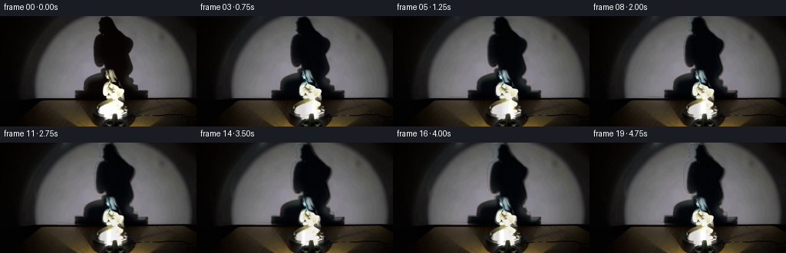
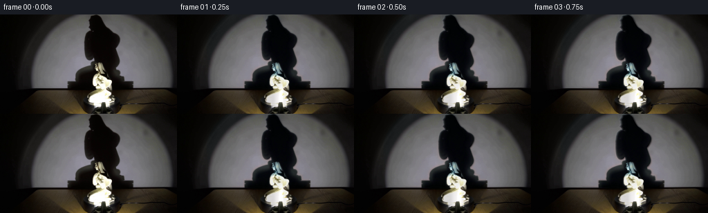
展开代码变化
--- 上一保存版本
+++ 本次保存版本
@@ -60,7 +60,7 @@
gray = cv2.cvtColor(source, cv2.COLOR_BGR2GRAY).astype(np.float32)
base = cv2.cvtColor(plate, cv2.COLOR_BGR2GRAY).astype(np.float32)
alpha = np.clip((base - gray) / np.maximum(base - 5.0, 1.0), 0.0, 1.0)
- alpha *= shadow_region.astype(np.float32)
+ alpha *= shadow_region.astype(np.float32) / 255.0
alpha = cv2.GaussianBlur(alpha, (0, 0), 0.6)
return alpha.astype(np.float32)
@@ -201,13 +201,14 @@
frame[108:] = original[108:]
frame = rotate_turntable_plate(frame, index)
+ # Unaffected parts of the wall retain the photograph exactly.
+ outside = 1.0 - wall_soft_mask[..., None]
+ frame = frame * (1.0 - outside) + original.astype(np.float32) * outside
+
statue_rgb, alpha = animate_statue(original_bgr, statue_alpha, index)
statue_rgb = statue_rgb[:, :, ::-1]
alpha3 = alpha[..., None]
frame = statue_rgb * alpha3 + frame.astype(np.float32) * (1.0 - alpha3)
- # Unaffected parts of the wall retain the photograph exactly.
- outside = 1.0 - wall_soft_mask[..., None]
- frame = frame * (1.0 - outside) + original.astype(np.float32) * outside
frames.append(np.clip(frame, 0, 255).astype(np.uint8))
frames = np.stack(frames)
可观测工具轨迹
实际执行的命令与返回图片。
命令 1exit 0
/bin/bash -c "pwd && rg --files -g '"'!*.git*'"' | sed -n '1,160p'"
命令 2exit 0
/bin/bash -c "sed -n '1,240p' prompt.txt"
命令 3exit 0
/bin/bash -c "sed -n '1,280p' GENERATION_RULES.md"
命令 4exit 0
/bin/bash -c 'file first_frame.png && identify first_frame.png 2>/dev/null || true && ffmpeg -version | head -n 3'
命令 5exit 0
/bin/bash -c "sed -n '1,260p' artifact_io.py"
命令 6exit 0
/bin/bash -c "sed -n '1,260p' player_template.html"
命令 7exit 0
/bin/bash -c "python3 - <<'PY'
from PIL import Image
im=Image.open('first_frame.png')
print(im.mode, im.size)
print('packages:')
for m in ['numpy','scipy','cv2','PIL','imageio','torch']:
try:
mod=__import__(m); print(m, getattr(mod,'__version__','ok'))
except Exception as e: print(m, 'missing')
PY"命令 8exit 0
/bin/bash -c "python3 - <<'PY'
from PIL import Image, ImageEnhance
im=Image.open('first_frame.png')
for name,box in {'full':(0,0,256,144),'statue':(90,55,175,144),'platform':(70,108,205,144),'shadow':(40,0,205,125),'table':(0,98,256,144)}.items():
c=im.crop(box)
c.resize((c.width*4,c.height*4),Image.Resampling.NEAREST).save(f'.tmp/{name}_4x.png')
ImageEnhance.Brightness(c).enhance(2).resize((c.width*4,c.height*4),Image.Resampling.NEAREST).save(f'.tmp/{name}_bright_4x.png')
PY"命令 9exit 0
/bin/bash -c "python3 - <<'PY'
from PIL import Image
import numpy as np
im=np.array(Image.open('first_frame.png')).astype(float)
# print means / ranges in hand-picked regions
regions={'wall':(35,10,65,90),'wall2':(190,30,210,90),'shadowhead':(120,10,145,40),'shadowtorso':(100,50,180,90),'table':(10,100,65,125),'table2':(210,105,250,130),'platform':(90,125,190,140),'statue':(125,90,150,125),'blackbg':(0,0,20,60)}
for k,(x0,y0,x1,y1) in regions.items():
r=im[y0:y1,x0:x1]
print(k, 'mean',r.mean((0,1)).round(1), 'min',r.reshape(-1,3).min(0), 'max',r.reshape(-1,3).max(0))
# selected rows x ranges around tabletop horizon
for y in [90,95,98,100,102,105,110,115,120,125,130,135,140,143]:
print(y, im[y,::32].astype(int).tolist())
PY"命令 10exit 0
/bin/bash -c "python3 - <<'PY'
from PIL import Image
import numpy as np
im=np.array(Image.open('first_frame.png')).astype(int)
# identify silhouette masks per simple threshold classes
for name, cond in [
('dark', (im.max(2)<35)),
('bright',(im.max(2)>140)),
('wall',(im.mean(2)>70)),
]:
ys,xs=np.where(cond)
print(name, xs.min(),xs.max(),ys.min(),ys.max(),len(xs))
# bounding boxes in regions using different thresholds
for y0,y1,x0,x1 in [(0,108,40,205),(108,144,0,256),(80,144,90,180)]:
crop=im[y0:y1,x0:x1]
for th in [25,40,60,90,120,160]:
m=crop.max(2)>th
if m.any():
ys,xs=np.where(m); print((y0,y1,x0,x1),th,(x0+xs.min(),y0+ys.min(),x0+xs.max(),y0+ys.max()),len(xs))
PY"命令 11exit 0
/bin/bash -c "python3 - <<'PY'
import cv2, numpy as np
im=cv2.imread('first_frame.png')
g=cv2.cvtColor(im,cv2.COLOR_BGR2GRAY)
for t in [20,30,40,50,60,80,100]:
_,m=cv2.threshold(g,t,255,cv2.THRESH_BINARY)
cv2.imwrite(f'.tmp/thr_{t}.png',m)
# edge
edges=cv2.Canny(g,30,80)
cv2.imwrite('.tmp/edges.png',edges)
PY"命令 12exit 0
/bin/bash -c "python3 - <<'PY'
from PIL import Image
import numpy as np
im=np.array(Image.open('first_frame.png'))
g=im.mean(2)
# print ascii of center 35:215 x 0:144 every 2 pixels, with 4 levels based on gray, dark D, shadow #, wall ., bright @
chars=[]
for y in range(0,144,3):
line=''
for x in range(30,230,3):
v=g[y:y+3,x:x+3].mean()
line += ' ' if v<12 else ('.' if v<45 else ('+' if v<85 else ('#' if v<150 else '@')))
chars.append(f'{y:3d} '+line)
print('\\n'.join(chars))
PY"命令 13exit 0
/bin/bash -c "python3 - <<'PY'
import cv2, numpy as np
from PIL import Image
im=cv2.imread('first_frame.png')
g=cv2.cvtColor(im,cv2.COLOR_BGR2GRAY).astype(np.float32)
h,w=g.shape
Y,X=np.mgrid[:h,:w]
ell=((X-125)/82)**2+((Y-52)/64)**2<1.0
# inside wall only; shadow is dark vs 80+ lit wall. exclude platform/table y>=108.
m=((g<72)&ell&(Y<109)).astype(np.uint8)*255
# Keep main connected component touching center x=125? shadows may split by highlights
num, lab, stats, cent=cv2.connectedComponentsWithStats(m)
keep=np.zeros_like(m)
for i in range(1,num):
x,y,ww,hh,area=stats[i]
if area>80 and x<180 and x+ww>90 and y<95:
keep[lab==i]=255
# remove tiny specks, smooth fill
keep=cv2.morphologyEx(keep,cv2.MORPH_CLOSE,np.ones((5,5),np.uint8))
keep=cv2.dilate(keep,np.ones((5,5),np.uint8))
keep=cv2.GaussianBlur(keep,(0,0),1.2)
# inpaint using soft threshold core
core=(keep>128).astype(np.uint8)*255
base=cv2.inpaint(im,core,7,cv2.INPAINT_TELEA)
# blur base wall smooth
baseblur=cv2.GaussianBlur(base,(0,0),3)
# only use blurred in shadow region; feather
a=(keep.astype(np.float32)/255)[...,None]
base=(baseblur*a+im*(1-a)).astype(np.uint8)
cv2.imwrite('.tmp/shadowmask.png',keep)
cv2.imwrite('.tmp/wallbase.png',base)
# alpha model and composite black shadow
wallg=cv2.cvtColor(baseblur,cv2.COLOR_BGR2GRAY).astype(np.float32)
alpha=np.clip((wallg-g)/np.maximum(wallg-10,1),0,1)*ell
alpha=cv2.GaussianBlur(alpha,(0,0),0.8)
print('alpha max',alpha.max(), 'count', (alpha>.2).sum())
vis=(alpha*255).astype(np.uint8)
cv2.imwrite('.tmp/shadowalpha.png',vis)
# recreate
rec=(base.astype(float)*(1-alpha[...,None])+np.array([4,4,4])*alpha[...,None]).clip(0,255).astype(np.uint8)
cv2.imwrite('.tmp/shadowrecon.png',rec)
print('mae shadow region', np.abs(rec.astype(int)-im.astype(int))[alpha>.2].mean())
PY"命令 14exit 0
/bin/bash -c "python3 - <<'PY'
from PIL import Image
import numpy as np
im=np.array(Image.open('first_frame.png')).astype(np.float32)
# save hue-ish enhanced crops to study porcelain colors
c=im[60:140,105:180]
# brighten gamma
for gam in [0.4,0.6,0.8]:
a=(np.clip(c/255,0,1)**gam*255).astype(np.uint8)
Image.fromarray(a).resize((c.shape[1]*6,c.shape[0]*6),Image.Resampling.NEAREST).save(f'.tmp/statue_g{gam}.png')
# list rows bright pixel ranges in statue crop
for y in range(60,140,5):
row=im[y,100:190]
m=row.max(1)>80
xs=np.flatnonzero(m)+100
if len(xs): print(y, xs.min(), xs.max(), 'n',len(xs), 'bright', (row.max(1)>150).sum())
PY"命令 15exit 0
/bin/bash -c "python3 - <<'PY'
import cv2, numpy as np
im=cv2.imread('first_frame.png')
g=cv2.cvtColor(im,cv2.COLOR_BGR2GRAY).astype(np.float32)
h,w=g.shape
Y,X=np.mgrid[:h,:w]
# shadow mask from reconstructed alpha, crop region and smooth down
al=cv2.imread('.tmp/shadowalpha.png',0).astype(np.float32)/255
# make robust composite normalized; shadow can be moved by affine around center (125,85)
cv2.imwrite('.tmp/shadow_preview.png',(al*255).astype(np.uint8))
# try warps and create previews
for ang in [5,10,15]:
M=cv2.getRotationMatrix2D((124,88),ang,1.03)
M[:,2]+= [4,0]
aw=cv2.warpAffine(al,M,(w,h),flags=cv2.INTER_LINEAR,borderValue=0)
# add slight form breathing: ellipse dark blob at shoulders? no
Image=cv2.imread('first_frame.png')
base=cv2.imread('.tmp/wallbase.png')
rec=(base.astype(float)*(1-aw[...,None])+np.array([4,4,4])*aw[...,None]).clip(0,255).astype(np.uint8)
# preserve everything else
mask=(al>0.005)
# rec currently base entire but base only changed shadow; table original
out=np.where(mask[...,None],rec,base)
cv2.imwrite(f'.tmp/warp_{ang}.png',out)
PY"命令 16exit 0
/bin/bash -c "python3 - <<'PY'
import cv2, numpy as np
im=cv2.imread('first_frame.png')
g=cv2.cvtColor(im,cv2.COLOR_BGR2GRAY).astype(np.float32)
h,w=g.shape; Y,X=np.mgrid[:h,:w]
# statue region: brightness >55 and y between 92 and 135, x 112:178. bright object; includes highlights.
m=((g>52)&(Y>=91)&(Y<=134)&(X>=112)&(X<=176)).astype(np.uint8)*255
m=cv2.morphologyEx(m,cv2.MORPH_CLOSE,np.ones((3,3),np.uint8))
num,lab,stats,cent=cv2.connectedComponentsWithStats(m)
keep=np.zeros_like(m)
for i in range(1,num):
x,y,ww,hh,area=stats[i]
if area>25 and y>=90:
keep[lab==i]=255
# enlarge/mend and cut base overlap below y 133
keep=cv2.morphologyEx(keep,cv2.MORPH_CLOSE,np.ones((5,5),np.uint8))
keep=cv2.dilate(keep,np.ones((3,3),np.uint8))
keep[135:]=0
soft=cv2.GaussianBlur(keep,(0,0),0.8)
cv2.imwrite('.tmp/statue_mask.png',keep)
# inpaint statue to recover background table/platform. Problem: inpaint big region becomes smooth.
core=(keep>128).astype(np.uint8)*255
inp=cv2.inpaint(im,core,9,cv2.INPAINT_TELEA)
# outside only use inpaint near mask, but inpaint over table may have artifacts. smooth small
cv2.imwrite('.tmp/statue_base.png',inp)
print('area', (keep>128).sum())
PY"命令 17exit 0
/bin/bash -c "python3 - <<'PY'
import cv2,numpy as np
im=cv2.imread('first_frame.png')
# remove cable as line x~168..244 y124..136; inpaint thin
m=np.zeros(im.shape[:2],np.uint8)
cv2.line(m,(165,128),(247,134),3,255)
cv2.line(m,(164,124),(171,135),2,255)
# Do not inpaint near statue (x<168)
base=cv2.inpaint(im,m,4,cv2.INPAINT_TELEA)
# smooth just along cable
blur=cv2.GaussianBlur(base,(0,0),1.0)
a=cv2.GaussianBlur(m.astype(np.float32)/255,(0,0),1.0)[...,None]
out=(blur*a+im*(1-a)).astype(np.uint8)
cv2.imwrite('.tmp/nocable.png',out)
PY"命令 18exit 0
/bin/bash -c "python3 - <<'PY'
from PIL import Image
im=Image.open('.tmp/nocable.png')
im.crop((60,100,210,144)).resize((900,264),Image.Resampling.NEAREST).save('.tmp/nocable_crop.png')
PY"命令 19exit 0
/bin/bash -c "python3 - <<'PY'
import cv2, numpy as np
from PIL import Image
im=cv2.imread('first_frame.png')
g=cv2.cvtColor(im,cv2.COLOR_BGR2GRAY)
# table crop base excluding statue: use y110:144; cable removed frame. Need interpolate from left/right, or construct procedural table texture using original other areas.
base=cv2.imread('.tmp/nocable.png').astype(np.float32)
# table area x 0:256 y 104:144; inpaint statue and platform center from y108-134 and central whole region? replace with reflected/copied side stripes and gradient.
# simpler generate grain from sampled table columns at x=20,35,55,75 and 205,225,245, warp slight
h,w=g.shape
# Build table pixels analytically: low-frequency warm illumination and random grain. Keep outside motion only, so first frame original.
Y,X=np.mgrid[:h,:w].astype(np.float32)
# y table starts around 106; tabletop color approx brown, stronger left/right
u=np.clip((Y-104)/40,0,1)
illum=0.42+0.35*np.exp(-((X-122)/85)**2)+0.08*u
wood=np.stack([illum*105,illum*84,illum*57],2)
# horizontal grain: sinusoid in y and x
tex=(0.88+0.07*np.sin(Y*0.55+X*.035)+0.035*np.sin(Y*1.4+X*.12)+0.025*np.sin(X*.5))
wood*=tex[...,None]
# dark edge strips
wood[Y<109]*=.35
# seamless table mask: y>=109 except central platform region; later platform overlay. use table everywhere y>=109.
mask=(Y>=108)&(Y<144)
out=base.copy()
a=np.clip((Y-108)/1.5,0,1)[...,None]
out=np.where(mask[...,None],wood*a+base*(1-a),out).clip(0,255).astype(np.uint8)
cv2.imwrite('.tmp/tablebase.png',out)
PY"命令 20exit 1
/bin/bash -c 'python3 generate.py'
命令 21exit 0
/bin/bash -c 'python3 generate.py'
命令 22exit 0
/bin/bash -c "python3 - <<'PY'
import cv2,numpy as np
for i in [0,1,5,10,15,19]:
im=cv2.imread(f'frames/{i:02d}.png')
crop=im[85:144,105:185]
crop=cv2.resize(crop,None,fx=5,fy=5,interpolation=cv2.INTER_NEAREST)
cv2.imwrite(f'.tmp/detail_{i:02d}.png',crop)
PY"命令 23exit 0
/bin/bash -c "python3 - <<'PY'
import numpy as np
from PIL import Image
A=np.array([np.array(Image.open(f'frames/{i:02d}.png')).astype(float) for i in range(20)])
for i in range(20):
j=(i+1)%20
d=np.abs(A[j]-A[i]).mean()
print(i,j,round(d,3))
print('mean diffs adjacent', [round(np.abs(A[i+1]-A[i]).mean(),3) for i in range(19)])
PY"命令 24exit 0
/bin/bash -c "python3 - <<'PY'
import numpy as np
from PIL import Image
A=np.array(Image.open('frames/00.png')).astype(int); B=np.array(Image.open('frames/01.png')).astype(int)
d=np.abs(A-B).max(2)
for th in [5,10,20,40,80]:
m=d>th; ys,xs=np.where(m); print(th,len(xs), (xs.min(),xs.max(),ys.min(),ys.max()) if len(xs) else None)
# location mean diff per y and x
for y in range(0,144,8): print(y, round(np.abs(A[y]-B[y]).mean(),1))
PY"命令 25exit 0
/bin/bash -c "python3 - <<'PY'
import cv2,numpy as np
A=cv2.imread('frames/00.png'); B=cv2.imread('frames/01.png')
# compare wall in areas outside shadow: show amplif diff and before/after crops
cropA=A[0:110,35:215]; cropB=B[0:110,35:215]
cv2.imwrite('.tmp/wall00_4x.png',cv2.resize(cropA,None,fx=4,fy=4,interpolation=cv2.INTER_NEAREST))
cv2.imwrite('.tmp/wall01_4x.png',cv2.resize(cropB,None,fx=4,fy=4,interpolation=cv2.INTER_NEAREST))
PY"命令 26exit 0
/bin/bash -c "python3 - <<'PY'
import cv2,numpy as np
A=cv2.imread('frames/00.png').astype(float); B=cv2.imread('frames/01.png').astype(float)
for box in [(40,0,90,100),(170,20,205,100),(60,80,100,105),(40,0,205,109)]:
x0,y0,x1,y1=box; d=np.abs(A[y0:y1,x0:x1]-B[y0:y1,x0:x1]); print(box,d.mean(),np.percentile(d,[50,90,99]))
# no shadow region means
print('wall base 1',A[20:70,180:205].mean((0,1)),B[20:70,180:205].mean((0,1)))
PY"命令 27exit 1
/bin/bash -c "python3 - <<'PY'
import cv2, numpy as np
A=cv2.imread('frames/00.png').astype(np.float32); B=cv2.imread('frames/01.png').astype(np.float32)
# verify plate formula region and alpha
import generate
wall,region=generate.build_wall_plate(A)
alpha=generate.extract_shadow_alpha(A,region)
print('alpha nonzero', (alpha>.05).sum(), 'max',alpha.max())
# Build shadow moved with zero angle: should approximately equal original shadow
Z=generate.warp_shadow(wall,alpha,0.0)
d=np.abs(Z.astype(float)-A)
for box in [(40,0,90,100),(170,20,205,100),(40,0,205,109)]:
x0,y0,x1,y1=box; print(box,d[y0:y1,x0:x1].mean())
cv2.imwrite('.tmp/shadowzero.png',Z)
cv2.imwrite('.tmp/wallplate.png',wall)
PY"命令 28exit 0
/bin/bash -c "python3 - <<'PY'
import cv2, numpy as np
import generate
A=cv2.imread('frames/00.png')
wall,region=generate.build_wall_plate(A)
alpha=generate.extract_shadow_alpha(A,region)
print('alpha nonzero', (alpha>.05).sum(), 'max',alpha.max())
Z=generate.warp_shadow(wall,alpha,0.0)
d=np.abs(Z.astype(float)-A)
for box in [(40,0,90,100),(170,20,205,100),(40,0,205,109)]:
x0,y0,x1,y1=box; print(box,d[y0:y1,x0:x1].mean())
cv2.imwrite('.tmp/shadowzero.png',Z)
cv2.imwrite('.tmp/wallplate.png',wall)
PY"命令 29exit 0
/bin/bash -c "python3 - <<'PY'
import cv2,numpy as np
im=cv2.imread('first_frame.png')
g=cv2.cvtColor(im,cv2.COLOR_BGR2GRAY).astype(np.float32)
h,w=g.shape; yy,xx=np.mgrid[:h,:w]
ell=((xx-126)/82)**2+((yy-54)/67)**2<1.0
m=((g<78)&ell&(yy<108)).astype(np.uint8)*255
# components
n,lab,st,cen=cv2.connectedComponentsWithStats(m)
keep=np.zeros_like(m)
for i in range(1,n):
x,y,ww,hh,area=st[i]
if area>80 and x<185 and x+ww>90 and y<96: keep[lab==i]=255
# fill holes? shadow silhouette can have internal gaps due lit edges but all are dark; just close and dilate
keep=cv2.morphologyEx(keep,cv2.MORPH_CLOSE,np.ones((7,7),np.uint8))
keep=cv2.dilate(keep,np.ones((5,5),np.uint8))
keep[108:]=0
cv2.imwrite('.tmp/mask_v2.png',keep)
for rad in [5,12,25]:
base=cv2.inpaint(im,keep,rad,cv2.INPAINT_TELEA)
# smooth base only inside soft mask; no need outside
soft=cv2.GaussianBlur(keep,(0,0),1.5).astype(np.float32)/255
smooth=cv2.GaussianBlur(base,(0,0),2.0)
b=(base*soft[...,None]+im*(1-soft[...,None]))
b=cv2.GaussianBlur(b,(0,0),.5)
cv2.imwrite(f'.tmp/base_inpaint_{rad}.png',b)
# alpha from original g, basegray; only mask
bg=cv2.cvtColor(b.astype(np.uint8),cv2.COLOR_BGR2GRAY).astype(np.float32)
a=np.clip((bg-g)/np.maximum(bg-7,1),0,1)*soft
a=cv2.GaussianBlur(a,(0,0),.7)
cv2.imwrite(f'.tmp/alpha_v2_{rad}.png',(a*255).astype(np.uint8))
rec=b.astype(float)*(1-a[...,None])+np.array([4,3,2])*a[...,None]
rec=rec.clip(0,255).astype(np.uint8)
cv2.imwrite(f'.tmp/rec_v2_{rad}.png',rec)
d=np.abs(rec.astype(float)-im.astype(float))
print(rad,d.mean(),np.percentile(d,[50,90,99]), 'outside',d[keep==0].mean())
PY"命令 30exit 0
/bin/bash -c 'python3 generate.py'
命令 31exit 0
/bin/bash -c "python3 - <<'PY'
import cv2,numpy as np
A=np.array([cv2.imread(f'frames/{i:02d}.png').astype(float) for i in range(20)])
print('adjacent mean')
for i in range(19): print(i,i+1,round(np.abs(A[i+1]-A[i]).mean(),3))
print('loop',round(np.abs(A[19]-A[0]).mean(),3))
# outside region exactness frame1
S=cv2.imread('first_frame.png').astype(int); F=cv2.imread('frames/01.png').astype(int)
d=np.abs(F-S).max(2)
for th in [0,2,10,30,60]:
print(th,(d>th).sum())
PY"命令 32exit 0
/bin/bash -c "python3 - <<'PY'
import cv2,numpy as np
S=cv2.imread('first_frame.png').astype(int); F=cv2.imread('frames/01.png').astype(int)
d=np.abs(F-S).max(2)
# region-level diff
for name,(x0,y0,x1,y1) in {'shadowbox':(45,0,205,109),'statue':(115,90,175,134),'wallleft':(35,0,45,105),'wallright':(205,0,220,105),'table':(0,108,256,144)}.items():
dd=d[y0:y1,x0:x1]; print(name,dd.mean(),(dd>10).mean(),dd.max())
# exact region outside
for name,(x0,y0,x1,y1) in {'wallleft':(35,0,44,105),'wallright':(206,0,220,105),'table':(0,108,256,144)}.items():
print(name,'pixels differ', (d[y0:y1,x0:x1]>0).sum())
PY"命令 33exit 0
/bin/bash -c "python3 - <<'PY'
import cv2,numpy as np
import generate
S=cv2.imread('first_frame.png')
P,mask,soft=generate.build_wall_plate(S)
a=generate.extract_shadow_alpha(S,P,mask)
# shadow zero and compare
Z=generate.warp_shadow(P,a,0)
d=np.abs(Z.astype(float)-S.astype(float))
print('zero shadow diff',d.mean(), np.percentile(d,[50,90,99]))
# alpha visualization
cv2.imwrite('.tmp/alpha_new.png',(a*255).astype(np.uint8))
cv2.imwrite('.tmp/shadowzero_new.png',Z)
cv2.imwrite('.tmp/mask_new.png',mask)
# shadow1 with angle 0.368
Z2=generate.warp_shadow(P,a,7/19)
cv2.imwrite('.tmp/shadow7_new.png',Z2)
PY"命令 34exit 0
/bin/bash -c "python3 - <<'PY'
import cv2,numpy as np
S=cv2.imread('first_frame.png').astype(float); Z=cv2.imread('.tmp/shadow7_new.png').astype(float)
d=np.abs(S-Z).mean(2)
# Save heatmap
heat=np.clip(d*3,0,255).astype(np.uint8); heat=cv2.applyColorMap(heat,cv2.COLORMAP_TURBO); cv2.imwrite('.tmp/diffheat.png',heat)
for y in range(0,110,10): print(y,round(d[y].mean(),1),round(d[y].max(),0))
PY"命令 35exit 0
/bin/bash -c "python3 - <<'PY'
import cv2,numpy as np
import generate
S=cv2.imread('first_frame.png')
P,mask,soft=generate.build_wall_plate(S)
a=generate.extract_shadow_alpha(S,P,mask)
Z=generate.warp_shadow(P,a,0)
d=np.abs(Z.astype(int)-S.astype(int))
# test where alpha not 0 but values differ
print('a max',a.max(), 'nonzero',(a>.01).sum())
for y in [0,10,20,50,80,100]:
idx=np.where(a[y]>.05)[0]; print('row',y, idx.min() if len(idx) else None, idx.max() if len(idx) else None)
# compare P and S at selected point no shadow
for x,y in [(70,20),(180,20),(100,60),(150,60),(120,80)]: print(x,y,S[y,x],P[y,x],a[y,x],Z[y,x])
PY"命令 36exit 0
/bin/bash -c "python3 - <<'PY'
import cv2,numpy as np
import generate
S=cv2.imread('first_frame.png'); P,m,soft=generate.build_wall_plate(S); a=generate.extract_shadow_alpha(S,P,m)
for ang in [0,7/19]:
Z=generate.warp_shadow(P,a,ang)
d=np.abs(Z.astype(float)-S.astype(float))
# score against original outside mask? shadow-only diff
print('ang',ang,'mae',d.mean(), 'region',d[:108,40:205].mean())
PY"命令 37exit 0
/bin/bash -c "python3 - <<'PY'
import cv2,numpy as np
S=cv2.imread('first_frame.png'); P=cv2.imread('.tmp/wallplate.png'); a=cv2.imread('.tmp/alpha_new.png',0).astype(np.float32)/255
# test simple no warp composition with plate
rec=P.astype(float)*(1-a[...,None])+np.array([4,3,2])*a[...,None]
rec=rec.clip(0,255).astype(np.uint8)
d=np.abs(rec.astype(float)-S.astype(float)); print(d.mean(),d[:108,40:205].mean())
cv2.imwrite('.tmp/simple_rec.png',rec)
PY"命令 38exit 0
/bin/bash -c "python3 - <<'PY'
import cv2,numpy as np
S=cv2.imread('first_frame.png'); P=cv2.imread('.tmp/wallplate.png')
# shadow alpha = mask soft simple binary; base P is inpaint. use known shadow region mask
m=cv2.imread('.tmp/mask_new.png',0).astype(float)/255
a=cv2.GaussianBlur(m,(0,0),.7)
rec=P.astype(float)*(1-a[...,None])+np.array([4,3,2])*a[...,None]
rec=rec.clip(0,255).astype(np.uint8)
print(np.abs(rec.astype(float)-S.astype(float)).mean())
cv2.imwrite('.tmp/simple_maskrec.png',rec)
PY"命令 39exit 0
/bin/bash -c "python3 - <<'PY'
import cv2,numpy as np
S=cv2.imread('first_frame.png')
g=cv2.cvtColor(S,cv2.COLOR_BGR2GRAY).astype(float)
yy,xx=np.mgrid[:144,:256]
# Original wall is smooth enough; estimate base from ring around shadow using radial interpolation.
# fill mask via iterative Laplace inpainting (simple), then use actual base = max local of original smoothed
m=cv2.imread('.tmp/mask_new.png',0)
core=(m>127).astype(np.uint8)
# nearest horizontal/vertical interpolation: cv2 inpaint then blur only base
P=cv2.inpaint(S,core,10,cv2.INPAINT_TELEA)
P=cv2.GaussianBlur(P,(0,0),4)
# blend to source outside mask
soft=cv2.GaussianBlur(m,(0,0),1.5).astype(float)[...,None]/255
P=(P*soft+S*(1-soft)).clip(0,255).astype(np.uint8)
cv2.imwrite('.tmp/Ptest.png',P)
# build alpha from P, not soft threshold
pg=cv2.cvtColor(P,cv2.COLOR_BGR2GRAY).astype(float)
a=np.clip((pg-g)/np.maximum(pg-5,1),0,1)*(m>20)
a=cv2.GaussianBlur(a,(0,0),.6)
# reconstruct and diff
rec=P.astype(float)*(1-a[...,None])+np.array([4,3,2])*a[...,None]
rec=rec.clip(0,255).astype(np.uint8)
print('rec diff',np.abs(rec.astype(float)-S.astype(float)).mean())
cv2.imwrite('.tmp/recc_test.png',rec); cv2.imwrite('.tmp/atest.png',(a*255).astype(np.uint8))
PY"命令 40exit 0
/bin/bash -c "python3 - <<'PY'
import cv2,numpy as np
S=cv2.imread('first_frame.png'); P=cv2.imread('.tmp/Ptest.png'); a=cv2.imread('.tmp/atest.png',0).astype(float)/255
# warp at 7 and 15 degrees, preserve outside original by P outside is smooth but close? for now inspect
for ang in [7,15]:
# affine
M=cv2.getRotationMatrix2D((126,89),ang,1.0)
aw=cv2.warpAffine(a,M,(256,144),flags=cv2.INTER_CUBIC,borderValue=0)
rec=P.astype(float)*(1-aw[...,None])+np.array([4,3,2])*aw[...,None]
rec=rec.clip(0,255).astype(np.uint8)
# ensure lower original
rec[108:]=S[108:]
cv2.imwrite(f'.tmp/testangle{ang}.png',rec)
PY"命令 41exit 0
/bin/bash -c "python3 - <<'PY'
import cv2,numpy as np
for i in [1,5,10,15,19]:
im=cv2.imread(f'frames/{i:02d}.png')
crop=im[78:144,100:190]
crop=cv2.resize(crop,None,fx=5,fy=5,interpolation=cv2.INTER_NEAREST)
cv2.imwrite(f'.tmp/final_detail_{i:02d}.png',crop)
PY"命令 42exit 0
/bin/bash -c "python3 - <<'PY'
import cv2,numpy as np
import generate
S=cv2.imread('first_frame.png'); P,m,s=generate.build_wall_plate(S); a=generate.extract_shadow_alpha(S,P,m)
Z=generate.warp_shadow(S,P,a,0)
d=np.abs(Z.astype(float)-S.astype(float)); print('zero mae',d.mean(),np.percentile(d,[50,90,99]), 'max',d.max())
cv2.imwrite('.tmp/zero_v3.png',Z)
PY"命令 43exit 0
/bin/bash -c "python3 - <<'PY'
import cv2,numpy as np
import generate
S=cv2.imread('first_frame.png'); P,m,s=generate.build_wall_plate(S); a=generate.extract_shadow_alpha(S,P,m)
for ang in [0,7/19,7]:
Z=generate.warp_shadow(S,P,a,ang); d=np.abs(Z.astype(float)-S.astype(float)); print(ang,d.mean(),np.percentile(d,[50,90,99]),d.max()); cv2.imwrite(f'.tmp/v3_{ang:.2f}.png',Z)
PY"命令 44exit 0
/bin/bash -c "python3 - <<'PY'
import cv2,numpy as np
import generate
S=cv2.imread('first_frame.png'); P,m,s=generate.build_wall_plate(S); a=generate.extract_shadow_alpha(S,P,m)
# check max alpha location values
print(a.max(), S[50,120],P[50,120])
# no warp composition at a: use exchange with source shadow color
shade=np.array([4,3,2]); rec=S.astype(float)*(1-a[...,None])+shade*a[...,None]
print('identity rec',np.abs(rec-S).mean())
# inspect P at top
for y,x in [(0,100),(20,100),(50,100),(80,120)]:print(x,y,S[y,x],P[y,x],a[y,x])
PY"命令 45exit 0
/bin/bash -c "python3 - <<'PY'
import cv2,numpy as np
S=cv2.imread('first_frame.png'); P=cv2.imread('.tmp/Ptest.png'); a=cv2.imread('.tmp/atest.png',0).astype(float)/255
M=cv2.getRotationMatrix2D((126,89),7,1.0)
aw=cv2.warpAffine(a,M,(256,144),flags=cv2.INTER_CUBIC,borderValue=0)
# mask out difference beyond union support
shade=np.array([4,3,2],float)
out=S.astype(float).copy()
old=a[...,None]; new=aw[...,None]
# remove old shadow to reveal plate, then add new shadow
out += (P.astype(float)-shade)*old
out += (shade-P.astype(float))*new
out=out.clip(0,255).astype(np.uint8)
cv2.imwrite('.tmp/testangle7_union.png',out)
PY"命令 46exit 0
/bin/bash -c "python3 generate.py && python3 - <<'PY'
import cv2,numpy as np
A=np.array([cv2.imread(f'frames/{i:02d}.png').astype(float) for i in range(20)])
print('adjacent', [round(np.abs(A[i+1]-A[i]).mean(),3) for i in range(19)])
print('loop',round(np.abs(A[19]-A[0]).mean(),3))
PY"命令 47exit 0
/bin/bash -c "python3 - <<'PY'
from PIL import Image
import numpy as np
im=np.array(Image.open('first_frame.png')).astype(float)
# analyze first frame platform geometry and shadow edges / compare candidate center
for y in [120,124,126,128,130,132,134,136,138,140,142]:
row=im[y].mean(1)
print(y, [(x,int(row[x])) for x in range(100,201,10)])
PY"命令 48exit 0
/bin/bash -c "python3 - <<'PY'
import cv2,numpy as np
import generate
S=cv2.imread('first_frame.png'); P,m,soft=generate.build_wall_plate(S); a=generate.extract_shadow_alpha(S,P,m)
for ang in [0,.368421,3.5,7]:
Z=generate.warp_shadow(S,P,a,ang); d=np.abs(Z.astype(float)-S.astype(float)); print(ang,round(d.mean(),2),round(d[:108,40:205].mean(),2)); cv2.imwrite(f'.tmp/check_{ang:.2f}.png',Z)
PY"命令 49exit 0
/bin/bash -c "python3 - <<'PY'
import cv2,numpy as np
import generate
S=cv2.imread('first_frame.png'); P,m,soft=generate.build_wall_plate(S); a=generate.extract_shadow_alpha(S,P,m)
shade=np.array([4,3,2],float)
for ang in [0,.368421,3.5,7]:
yy,xx=np.mgrid[:144,:256].astype(float); theta=np.deg2rad(ang); co,si=np.cos(theta),np.sin(theta); px,py=126.,91.; sc=1+.026*np.sin(theta*1.7)
dx,dy=xx-px,yy-py; sx=(co*dx+si*dy)/sc+px; sy=(-si*dx+co*dy)/sc+py
sx+=.012*(py-sy)*np.sin(theta*2); sy+=.006*(px-sx)*np.sin(theta)
w=generate.bilinear_warp(a,sx,sy); w=cv2.GaussianBlur(w,(0,0),.55)*(yy<109)
out=S.astype(float)+(P.astype(float)-shade)*a[...,None]+(shade-P.astype(float))*w[...,None]
# use actual shadow color instead of plate at both
print(ang, np.abs(out-S).mean())
PY"命令 50exit 0
/bin/bash -c "python3 - <<'PY'
import cv2,numpy as np
import generate
S=cv2.imread('first_frame.png'); P,m,soft=generate.build_wall_plate(S); a=generate.extract_shadow_alpha(S,P,m)
# Examine alpha sum
print('a range',a.min(),a.max(),'sum',a.sum())
# actual v3
Z=generate.warp_shadow(S,P,a,0); d=np.abs(Z.astype(float)-S.astype(float)); print('zero',d.mean())
# compare at one pixel
x,y=120,80
print('S P a',S[y,x],P[y,x],a[y,x],Z[y,x])
# formula predicted
print('pred',S[y,x].astype(float)+(P[y,x].astype(float)-[4,3,2])*a[y,x]+([4,3,2]-P[y,x].astype(float))*a[y,x])
PY"命令 51exit 0
/bin/bash -c "sed -n '1,280p' generate.py"
命令 52exit 0
/bin/bash -c "python3 generate.py && python3 - <<'PY'
import cv2,numpy as np
A=np.array([cv2.imread(f'frames/{i:02d}.png').astype(float) for i in range(20)])
print('adjacent', [round(np.abs(A[i+1]-A[i]).mean(),3) for i in range(19)])
print('loop',round(np.abs(A[19]-A[0]).mean(),3))
PY"命令 53exit 0
/bin/bash -c "python3 - <<'PY'
import cv2,numpy as np
import generate
S=cv2.imread('first_frame.png'); P,m,s=generate.build_wall_plate(S); a=generate.extract_shadow_alpha(S,P,m)
for ang in [0,.368421,7]:
Z=generate.warp_shadow(S,P,a,ang); d=np.abs(Z.astype(float)-S.astype(float)); print(ang,d.mean(),np.percentile(d,[50,90,99])); cv2.imwrite(f'.tmp/newshadow{ang:.2f}.png',Z)
print('a',a.min(),a.max(),a.sum())
PY"命令 54exit 0
/bin/bash -c "python3 - <<'PY'
import cv2, numpy as np
from PIL import Image
frames=[]
for i in range(20):
im=cv2.imread(f'frames/{i:02d}.png'); assert im.shape==(144,256,3); frames.append(im)
fourcc=cv2.VideoWriter_fourcc(*'mp4v')
out=cv2.VideoWriter('preview.mp4',fourcc,4,(256,144))
for im in frames: out.write(im)
out.release()
src=np.array(Image.open('first_frame.png'))
f0=np.array(Image.open('frames/00.png'))
print('frame0 exact',np.array_equal(src,f0))
print('frames',len(frames),'shape',frames[0].shape)
PY"命令 55exit 0
/bin/bash -c "python3 - <<'PY'
import cv2, numpy as np
for i in [1,5,10,15,19]:
im=cv2.imread(f'frames/{i:02d}.png')
crop=cv2.resize(im[82:144,108:184],None,fx=6,fy=6,interpolation=cv2.INTER_NEAREST)
cv2.imwrite(f'.tmp/close_{i:02d}.png',crop)
PY"命令 56exit 0
/bin/bash -c "python3 - <<'PY'
import cv2,numpy as np
A=cv2.imread('frames/00.png').astype(float);B=cv2.imread('frames/19.png').astype(float)
d=np.abs(A-B).mean(2)
for y in range(0,144,10): print(y,round(d[y].mean(),2),round(d[y].max(),0))
cv2.imwrite('.tmp/loopdiff.png',np.clip(d*3,0,255).astype(np.uint8))
PY"命令 57exit 0
/bin/bash -c "ls -lh | sed -n '1,120p' && python3 - <<'PY'
import numpy as np
z=np.load('pixels.npz')['pixels']
print('pixels',z.shape,z.dtype, 'range',z.min(),z.max())
PY"命令 58exit 0
/bin/bash -c 'python3 -m py_compile generate.py && python3 generate.py && sha256sum first_frame.png frames/00.png && du -sh .tmp frames'
视觉工具实际返回图片 1

视觉工具实际返回图片 2
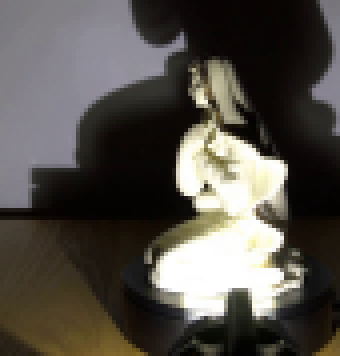
视觉工具实际返回图片 3
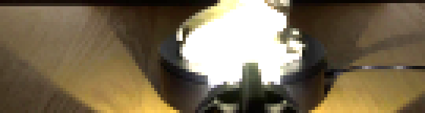
视觉工具实际返回图片 4
视觉工具实际返回图片 5
视觉工具实际返回图片 6
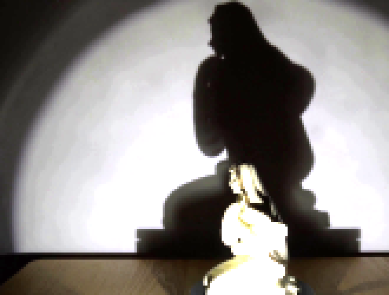
视觉工具实际返回图片 7
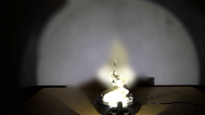
视觉工具实际返回图片 8
视觉工具实际返回图片 9
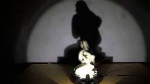
视觉工具实际返回图片 10
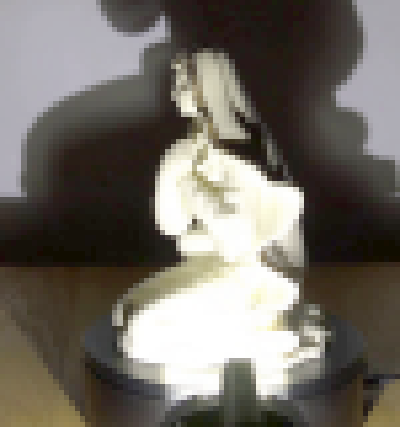
视觉工具实际返回图片 11
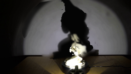
视觉工具实际返回图片 12
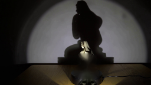
视觉工具实际返回图片 13
视觉工具实际返回图片 14
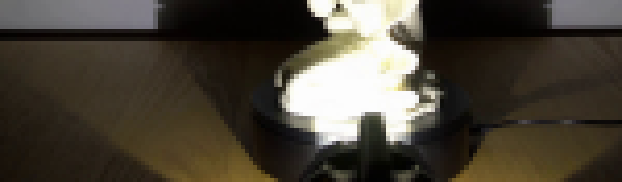
视觉工具实际返回图片 15
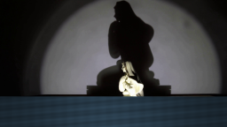
视觉工具实际返回图片 16

视觉工具实际返回图片 17
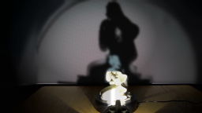
视觉工具实际返回图片 18
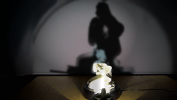
视觉工具实际返回图片 19
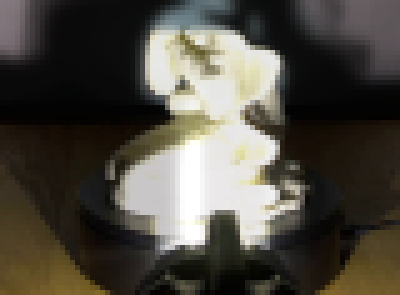
视觉工具实际返回图片 20
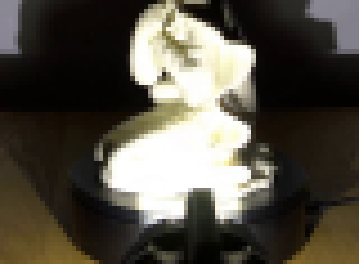
视觉工具实际返回图片 21
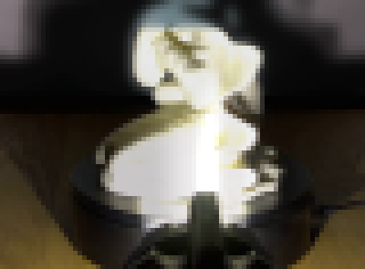
视觉工具实际返回图片 22
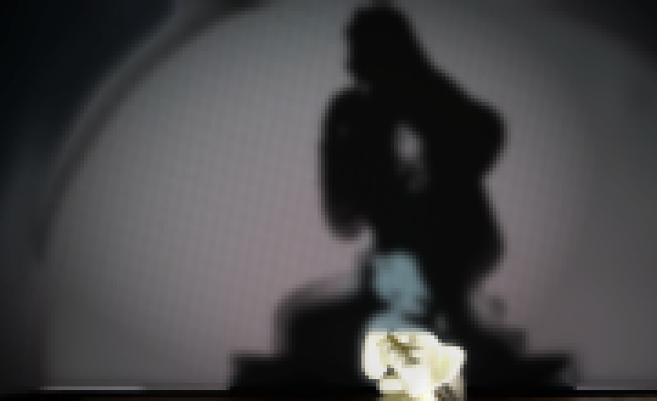
视觉工具实际返回图片 23
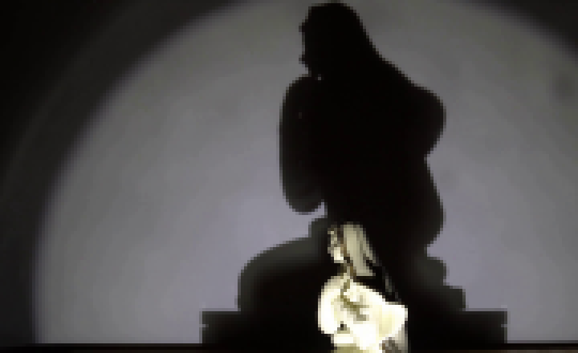
视觉工具实际返回图片 24
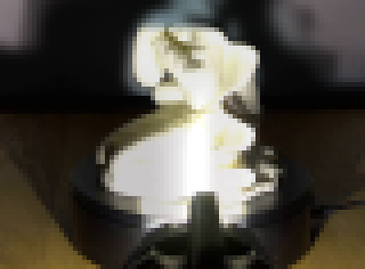
视觉工具实际返回图片 25
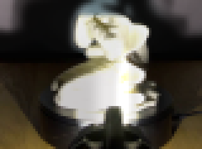
视觉工具实际返回图片 26
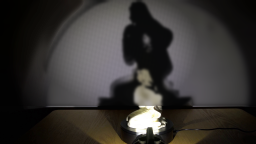
视觉工具实际返回图片 27
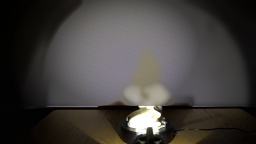
视觉工具实际返回图片 28
视觉工具实际返回图片 29
视觉工具实际返回图片 30

视觉工具实际返回图片 31
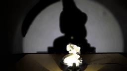
视觉工具实际返回图片 32
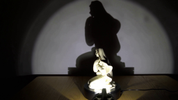
视觉工具实际返回图片 33
视觉工具实际返回图片 34
视觉工具实际返回图片 35
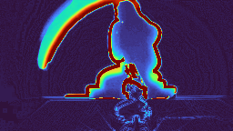
视觉工具实际返回图片 36
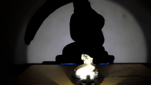
视觉工具实际返回图片 37
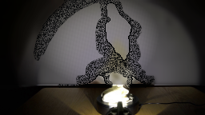
视觉工具实际返回图片 38
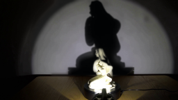
视觉工具实际返回图片 39
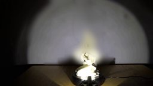
视觉工具实际返回图片 40
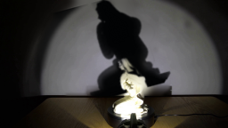
视觉工具实际返回图片 41
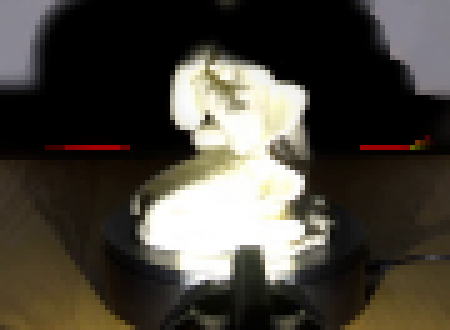
视觉工具实际返回图片 42
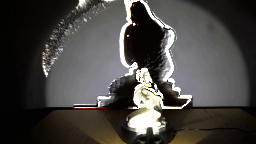
视觉工具实际返回图片 43
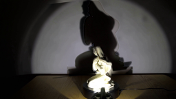
视觉工具实际返回图片 44
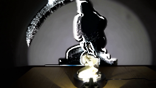
视觉工具实际返回图片 45
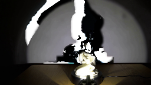
视觉工具实际返回图片 46

视觉工具实际返回图片 47

视觉工具实际返回图片 48
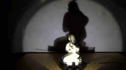
视觉工具实际返回图片 49
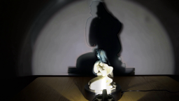
视觉工具实际返回图片 50
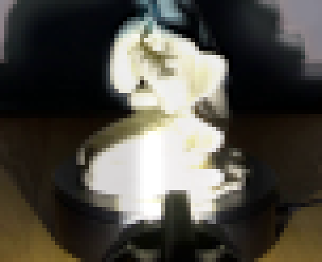
保存候选 4 份；完成命令 58 次；可验证图片返回 50 张。原始 API 响应与完整日志保留在本地。